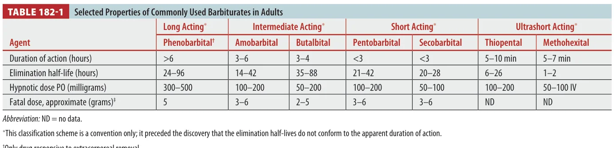

Barbiturate poisoning is a sedative-hypnotic coma problem where early deaths come from respiratory arrest and cardiovascular collapse. There is no flumazenil-style rescue; the ED skill is airway support, temperature support, hemodynamics, and enhanced elimination when the drug is phenobarbital.
Board lens: if the stem says coma + hypothermia + hypotension + respiratory depression, think barbiturate. If it says phenobarbital, think multidose activated charcoal and possible extracorporeal removal for severe cases.
Overview
Where used Still used for epilepsy in many regions, sedative withdrawal syndromes, toxicologic seizures, and refractory intracranial hypertension.
Common severe pattern CNS depression, respiratory depression, hypothermia, hypotension, ileus, aspiration risk, and prolonged coma.
Coingestion effect Alcohol, opioids, and benzodiazepines can magnify respiratory depression. Mixed stimulant ingestion may look less agitated because the barbiturate depresses the CNS.
Tintinalli Source Check
Table 182-1 separates phenobarbital from short-acting and ultrashort-acting agents. It also marks the testable point: only phenobarbital is meaningfully responsive to extracorporeal removal.

Tintinalli Table 182-1. Selected properties of commonly used barbiturates in adults.
Pharmacology
Barbiturates enhance inhibitory activity at the GABA-A receptor. Unlike benzodiazepines, which increase chloride channel opening frequency, barbiturates increase the duration of chloride channel opening. At high concentrations, they may directly open the channel and also inhibit excitatory neurotransmission.
Why more dangerous than benzos: barbiturates have a narrower safety margin and can produce deep coma, apnea, and shock without a reliable antagonist.
They are lipophilic enough to cross the blood-brain barrier and placenta. Metabolism is mainly hepatic, but elimination varies by agent. Phenobarbital has a long half-life and is the most important ED overdose agent because enhanced elimination can matter.
Clinical Features
Mild to moderateDrowsiness, disinhibition, ataxia, slurred speech, confusion: can mimic alcohol or benzodiazepine intoxication.
SevereStupor to coma, absent corneal reflexes, depressed deep tendon reflexes, loss of brainstem reflexes that may recover, apnea, hypotension.
Vital signsRespiratory depression usually occurs first. Hypothermia and hypotension are common.
SkinComa blisters/barb blisters may occur, but they are not specific.
Severe ingestion clue More than 10 times the hypnotic dose in a nontolerant patient suggests severe poisoning.
Diagnosis
Diagnosis is clinical first. A positive urine barbiturate screen can help, but false positives occur with ibuprofen or naproxen, and the serum level does not perfectly predict brain concentration or outcome.
Initial tests Glucose, electrolytes/chemistry, CBC, blood gas if ventilatory failure suspected, ECG, chest radiograph if aspiration or severe coma.
Coingestions Acetaminophen, salicylate, ethanol, opioids, benzodiazepines, and other sedatives when intentional or unclear.
Levels Barbiturate levels help identify coma cause and trend severe cases, especially phenobarbital, but do not replace clinical assessment.
Differential Opioids, benzodiazepines, alcohols, hypoglycemia, hypothermia, sepsis, intracranial catastrophe, and other sedative-hypnotics.
Treatment
Airway and Supportive Care
Assess mental status and airway early. Intubation with mechanical ventilation is often required in severe overdose. Treat hypotension first with crystalloid; if fluids fail, use vasopressors such as dopamine or norepinephrine. Monitor core temperature and rewarm when hypothermic.
Activated Charcoal
Single-dose activated charcoal is reasonable for cooperative, clinically stable patients presenting early after acute oral overdose with a protected airway. Multidose activated charcoal is mainly considered for life-threatening phenobarbital overdose.
Urinary Alkalinization
Urinary alkalinization can enhance clearance of phenobarbital and primidone, but it is less effective than multidose activated charcoal and does not improve clinical outcome reliably. It is not helpful for short-acting barbiturates.
Extracorporeal Elimination
Hemodialysis, hemoperfusion, and hemodiafiltration can enhance phenobarbital elimination in deteriorating severe poisoning. These modalities are not useful for most non-phenobarbital barbiturates. Exchange transfusion has been reported in neonatal phenobarbital toxicity.
Drug Dose Reference
Intervention
Adult dose
Pediatric dose
Use
Activated charcoal
50 g PO/NG once
1 g/kg PO/NG, max 50 g
Early ingestion with protected airway.
Multidose activated charcoal
Initial 50-100 g PO/NG, then 12.5-25 g every 4 h
Initial 1 g/kg, then 0.25-0.5 g/kg every 4 h
Life-threatening phenobarbital overdose with poison center/toxicology guidance.
Crystalloid
500-1000 mL boluses, reassess
10-20 mL/kg boluses
Hypotension from vasodilation/depressed cardiac output.
Norepinephrine
Start 0.05-0.1 mcg/kg/min IV, titrate
0.05-0.1 mcg/kg/min IV, titrate
Persistent shock after fluids.
Hemodialysis / hemoperfusion
Consult toxicology/nephrology
Consult toxicology/nephrology
Deteriorating severe phenobarbital toxicity, refractory coma/shock, or very high levels.
Benzodiazepines
Lorazepam 2-4 mg IV, repeat as needed
Lorazepam 0.1 mg/kg IV, max 4 mg
Barbiturate withdrawal seizures/agitation; not an antidote to overdose.
Disposition
Mild/moderate Observe with supportive care. A single charcoal dose may be enough if early and airway protected.
Discharge threshold Improving neurologic status and vital signs over 6-8 hours, safe ambulation, no rising concern for delayed toxicity, and mental health assessment when indicated.
ICU Intubation, vasopressors, severe coma, severe phenobarbital poisoning, or need for extracorporeal removal.
Barbiturate Withdrawal
Do not miss this: abrupt discontinuation in a dependent patient can cause anxiety, restlessness, hallucinations, delirium, and generalized seizures. Severe withdrawal has meaningful mortality.
Treat severe withdrawal with benzodiazepines or barbiturates and arrange gradual inpatient detoxification when needed.
Key Points: Barbiturate Poisoning
1. Airway firstRespiratory depression is usually the first vital sign problem.
2. Shock is realHypotension comes from CNS/cardiovascular depression and decreased vascular tone.
3. No clean antidoteManagement is supportive plus selected enhanced elimination.
4. Phenobarbital is specialMultidose charcoal and dialysis/hemoperfusion are most relevant here.
5. Screens can misleadIbuprofen and naproxen may create false-positive urine barbiturate screens.
6. Hypothermia mattersCore temperature monitoring and rewarming are part of resuscitation.
8. Withdrawal can killDependent patients can develop delirium and generalized seizures.
Assessment
Q1. A comatose overdose patient has hypothermia, hypotension, and shallow respirations. Which management priority comes first?
A. Flumazenil reverses benzodiazepines, not barbiturate coma, and may be dangerous in mixed overdose.
B. Correct. Respiratory arrest is an early lethal pathway in barbiturate poisoning.
C. Physostigmine is not appropriate for sedative-hypnotic coma.
D. Enhanced elimination never precedes ABC stabilization.
Q2. Which barbiturate is most classically responsive to multidose activated charcoal and possible extracorporeal elimination?
A. Ultrashort-acting agents are not the classic enhanced elimination target.
B. Thiopental is ultrashort acting and highly redistributed.
C. Correct. Phenobarbital is long acting and responsive to enhanced elimination strategies.
D. Secobarbital is short acting; enhanced elimination is not typically useful.
Q3. A urine barbiturate screen is positive, but the patient took large doses of ibuprofen. What is the best interpretation?
A. Correct. NSAIDs such as ibuprofen/naproxen have been reported to cause false-positive barbiturate screens.
B. It does not confirm phenobarbital.
C. Levels can help, especially in phenobarbital coma, but do not replace clinical assessment.
D. A screen never excludes all sedative-hypnotic poisoning.
Q4. Barbiturates differ from benzodiazepines at the GABA-A receptor because they primarily:
A. They enhance inhibitory chloride flux rather than block it.
B. This is not a serotonin syndrome mechanism.
C. Naloxone reverses opioid receptors.
D. Correct. Benzodiazepines increase opening frequency; barbiturates increase opening duration.
Q5. A patient with suspected barbiturate overdose is hypotensive after intubation. After crystalloid boluses fail, best next support?
A. Persistent hypotension is not dischargeable.
B. Correct. Treat shock with fluids, then vasopressors if needed.
C. Atropine is not routine treatment for barbiturate hypotension.
D. Sodium bicarbonate is not routine unless there is a specific indication such as sodium-channel blockade.
Q6. Which is the best statement about urinary alkalinization in barbiturate poisoning?
A. It is not useful for short-acting agents.
B. ABCs always come first.
C. Correct. It may increase phenobarbital/primidone clearance but is not the main modern enhanced-elimination strategy.
D. Not contraindicated as a class, but limited and not outcome-proven.
Q7. Which finding can occur in barbiturate coma but is not specific to barbiturate poisoning?
A. Correct. Barb blisters/coma blisters may occur but are not specific.
B. Cherry-red skin is classically linked to carbon monoxide/cyanide teaching, not barbiturate coma.
C. Lead lines suggest chronic lead toxicity.
D. Torsades is not expected in every barbiturate patient.
Q8. A dependent patient abruptly stops barbiturates and develops hallucinations, delirium, and generalized seizures. Best diagnosis?
A. Opioid withdrawal is usually miserable but not classically delirium/seizures.
B. This is severe withdrawal, not a hangover.
C. Cholinergic crisis has secretions, bronchorrhea, diarrhea, miosis.
D. Correct. Barbiturate withdrawal can be life-threatening and resembles severe alcohol/benzodiazepine withdrawal.
Q9. Which coingestion most increases risk of fatal respiratory depression in barbiturate poisoning?
A. Iron has different GI/shock/metabolic toxicity.
B. Correct. Other sedative-hypnotics and alcohol magnify CNS and respiratory depression.
C. Acetaminophen has delayed hepatotoxicity, not immediate sedative synergy.
D. Calcium carbonate is not a sedative synergy.
Q10. A phenobarbital patient remains deeply comatose with worsening shock despite airway, fluids, vasopressors, and multidose charcoal. Best next consultation?
A. Skin findings are secondary.
B. Psychiatric evaluation waits until medically stabilized.
C. Correct. Severe deteriorating phenobarbital poisoning may require extracorporeal removal.
D. Orthopedic admission does not address poisoning.